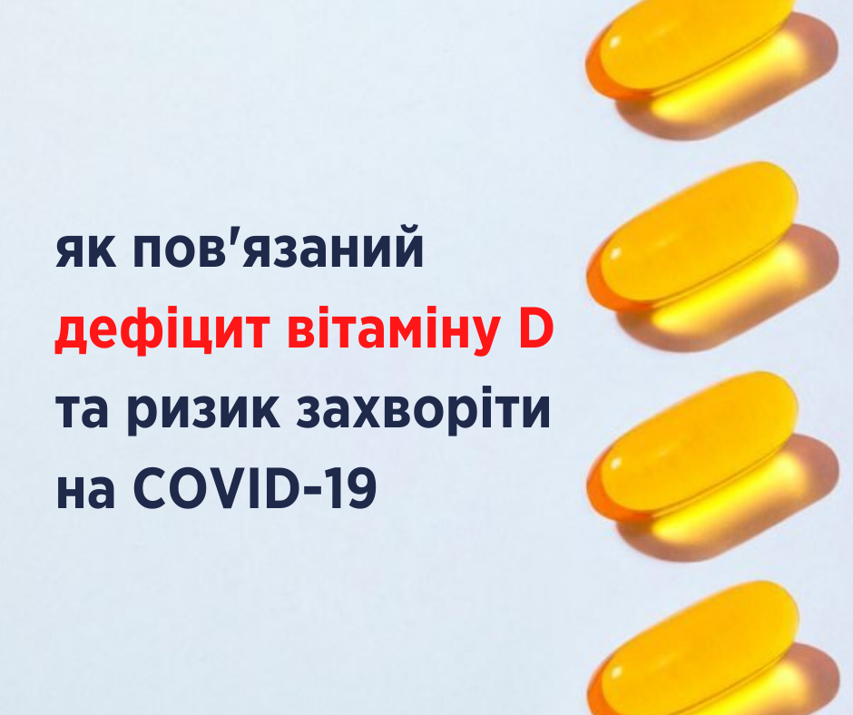

Як пов'язаний дефіцит вітаміну D та ризик захворіти на COVID-19
Нам відомо не так багато способів, щоб захиститися від COVID-19: дотримання фізичної дистанції, правильне (!) носіння маски в людних місцях та людьми з симптомами хвороби, миття рук та загалом дотримання здорового способу життя, щоби підтримати роботу імунної системи в ці скрутні часи. Але, можливо, нам у пригоді може стати ще один засіб — це вітамін D. Ключове слово — можливо☝️
Різні науковці активно досліджують ефективність вітаміну D проти вірусу SARS-CoV-2, та наявних даних поки недостатньо, щоб остаточно всім рекомендувати вживати такі пігулки. Однак, попередні результати такі: низка досліджень демонструють, що люди, які мають дефіцит вітаміну D, ймовірно, мають вищі ризики захворіти на COVID-19 та мати тяжчий перебіг хвороби.
Що це за дослідження
У Чиказькому університеті медицини у 489 пацієнтів виміряли рівень вітаміну D за рік до тестування на COVID-19. Ті, хто мав дефіцит вітаміну D, майже вдвічі частіше (в 1,77 разів) отримували позитивний результат тесту, ніж ті, у кого був нормальний рівень вітаміну.
Мета-аналіз 40 досліджень показав: щоденний прийом вітаміну D, може захистити від гострих респіраторних інфекцій. Водночас зазначено, що таких висновків не достатньо для прийняття рішень щодо COVID-19. Поки що, у клінічній практиці ці дані використовувати не можна. Стаття поки опублікована в препринті, тобто ще має пройти експертну оцінку науковцями.
Ще в одному дослідженні взяли участь 76 пацієнтів з COVID-19, що потребували госпіталізації. На меті мали перевірити ефективність лікування кальцифедолом (формою вітаміну D) у відділенні інтенсивної терапії. З 50 пацієнтів, які приймали кальцифедол, лише 1 людина потребувала лікування в реанімації. З 26 пацієнтів, яким не давали кальцифедол, до реанімації потрапили 13 людей. Двоє з них померли. Натомість усі пацієнти, які приймали кальцифедол, одужали. Чи можна це взяти на озброєння в лікарнях по всьому світу? Ні, треба дочекатися результатів інших досліджень, в яких візьмуть участь більше учасників.
Деякі дослідження щодо використання вітаміну D у людей з COVID-19 плануються або вже набирають учасників. У них здебільшого будуть вводити вітамін D окремо або в поєднанні з іншими препаратами учасникам з дефіцитом вітаміну D. Тут є список
Як бачимо, інформація обнадійлива, але далеко не остаточна. Такі результати вказують на наявний зв’язок, але цього недостатньо, аби сказати, що вітамін D є цьому причиною.
Однак, цього вже достатньо, щоби вже переглянути свій раціон і спосіб життя — чи отримуємо ми свою норму вітаміну D? Бо ж навіть без огляду на пандемію, це дуже важливий вітамін для підтримки здорового організму та доброго самопочуття.
Звідки брати вітамін D і для чого він потрібен?
Організм людини потребує вітаміну D, адже він допомагає регулювати рівень кальцію і фосфору в організмі. Вони необхідні для підтримки здоров’я зубів, кісток і м’язів. Вітамін D також впливає на утворення і функціонування імунних клітин та нормальні імунні реакції.
Брак вітаміну D спостерігається при низці станів, як-то синдром полікистозних яєчників, біль в м’язах, депресія, деменція і часті застудні захворювання. Втомлюваність, погане загоєння ран, випадіння волосся, біль в м’язах також можуть свідчити про брак вітаміну D.
Найкращий спосіб отримати вітамін D — за допомогою сонячного світла та збалансованого раціону. У теплу пору року — з весни до осені — більшість людей отримують потрібну дозу вітаміну D, коли на них падають сонячні промені. Так вітамін утворюється в шкірі з холестерину під дією ультрафіолету. Для цього достатнього 20-30 хвилин побути на сонці.
Однак, восени та взимку, коли сонячний день скорочується, й ми загалом менше перебуваємо на сонці, нам може бути потрібна додаткова доза вітаміну D. Її можна отримати з їжі. Це жирна риба (оселедець та скумбрія, тунець і сардини), з печінки тріски, м’яса, в тому числі печінки та нирок, з яєць та не-знежирених молочних продуктів (вітамін D додають до них окремо, тому звертайте увагу на пакування, коли, наприклад, купуєте молоко).
Додаткового прийому вітаміну D також потребують вагітні жінки та жінки, які годують грудьми, люди з остеопорозом, історією частих переломів та ожирінням чи з порушеною абсорбцією, наприклад, з хворобою Крона чи синдромом подразненого кишківника. Рішення, щодо прийому вітаміну у більшому дозуванні, може приймати лише ваш лікар. Після того, як ви зробите аналіз, який покаже дефіцит вітаміну.
Але будьте пильними — при тривалому прийомі вітаміну у високих дозах він стає токсичним. Надлишок вітаміну D також може підвищити рівень кальцію в крові, збільшує ризики мати камені в нирках та мати порушення роботи серця. Таке працює лише з пігулками. Передозування на сонці отримати неможливо — в шкірі спрацьовує механізм зупинки утворення вітаміну D, коли його достатньо.
Тут є ще багато корисної інформації про цей вітамін:
Тож вітамін D не панацея і не ліки. І хоча нещодавні дослідження демонструють його позитивну роль у боротьбі з COVID-19, має пройти час та проведено багато ретельної роботи науковців, перш ніж ми зможемо робити висновки про його застосування.
А поки зверніться до свого сімейного лікаря, обговоріть з ним ваш спосіб життя та раціон. Можливо, вам не потрібно пити цей вітамін, можливо, лікар порадить зробити додатковий аналіз на вітамін D та визначить оптимальне для вас дозування. Але навіть якщо ви почнете пити цей вітамін або вже це робите, не припиняйте бути пильними та дотримуватися інших правил захисту від COVID-19 — фізичної дистанції, носіння маски та гігієни рук та піклуватися про здоров’я! Важливо все
Джерело: офіційна сторінка Уляни Супрун у Facebook